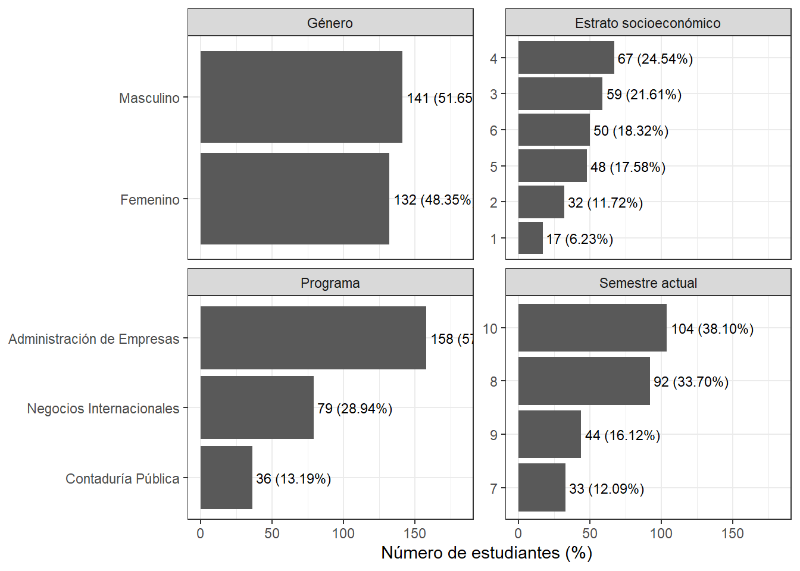
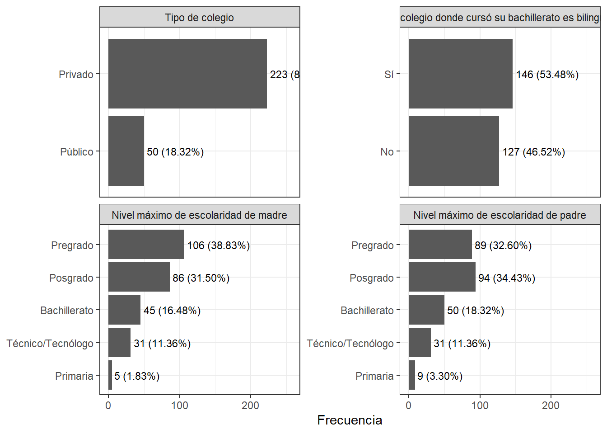
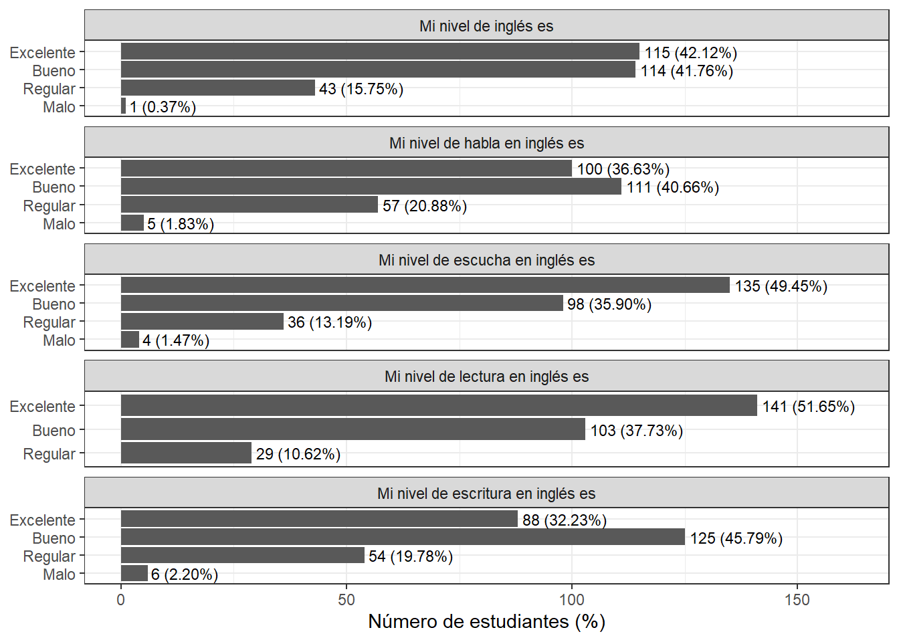

Capítulo 3 Análisis exploratorio
3.1 Análisis de las variables sociodemográficas
| n | prom | ds | mediana | q1 | q3 | edad_min | edad_max |
|---|---|---|---|---|---|---|---|
| 273 | 22.81 | 1.36 | 23 | 22 | 23 | 20 | 28 |
En este estudio se recolectaron datos mediante un cuestionario en línea para caracterizar a los participantes y contextualizar los análisis posteriores. Un total de 273 estudiantes completó el cuestionario. Para el análisis descriptivo de la edad, se excluyeron 3 registros por datos faltantes, por lo que se contó con 270 estudiantes. La edad de los participantes presentó un promedio de 22.81 años (DE = 1.36 años), donde el \(50\%\) de los participates tiene edad menor o igual 23 años. Además, las edades oscilaron entre 20 y 28 años (ver Tabla \@ref(tab:edad_num)).
| Variable | n | faltantes | pct_faltantes |
|---|---|---|---|
| Género | 273 | 0 | 0 |
| Estrato socioeconómico | 273 | 0 | 0 |
| Programa | 273 | 0 | 0 |
| Semestre actual | 273 | 0 | 0 |
En relación con la calidad de los datos para las variables sociodemográficas analizadas (Género, Estrato socioeconómico, y Semestre actual), no se identificaron valores faltantes (0 casos; 0% de datos perdidos). Esto evidencia una completitud total en estas variables, lo que permite realizar los análisis descriptivos posteriores sin necesidad de imputación o exclusión de casos por ausencia de información.
| Variable | Categoría | n | porcentaje |
|---|---|---|---|
| Género | Masculino | 141 | 51.65 |
| Género | Femenino | 132 | 48.35 |
| Estrato socioeconómico | 1 | 17 | 6.23 |
| Estrato socioeconómico | 2 | 32 | 11.72 |
| Estrato socioeconómico | 3 | 59 | 21.61 |
| Estrato socioeconómico | 4 | 67 | 24.54 |
| Estrato socioeconómico | 5 | 48 | 17.58 |
| Estrato socioeconómico | 6 | 50 | 18.32 |
| Programa | Administración de Empresas | 158 | 57.88 |
| Programa | Negocios Internacionales | 79 | 28.94 |
| Programa | Contaduría Pública | 36 | 13.19 |
| Semestre actual | 7 | 33 | 12.09 |
| Semestre actual | 8 | 92 | 33.70 |
| Semestre actual | 9 | 44 | 16.12 |
| Semestre actual | 10 | 104 | 38.10 |
Los participantes fueron estudiantes de pregrado matriculados en tres programas académicos: Administración de Empresas (158; 57.88%), Negocios Internacionales (79; 28.94%) y Contaduría Pública (36; 13.19%). El semestre cursado osciló entre séptimo y décimo, con una mayor proporción de estudiantes en décimo semestre (104; 38.1%) y octavo semestre (92; 33.7%). En cuanto al género, 132 (48.35%) participantes se identificaron como femenino y 141 (51.65%) como masculino. En términos socioeconómicos, la distribución se concentró en los estratos 4 (67; 24.54%) y 3 (59; 21.61%), seguidos por los estratos 6, 5, 2 y 1 (ver Tabla \@ref(tab:socio_demo)).

Cabe resaltar que las conclusiones serán parecedas o las mismas que las de la tabla.
3.2 Análisis de las variables de antecedentes educativos
Ahora, veamos el análisis de las variables de antecedentes educativos.
| Variable | n | faltantes | pct_faltantes |
|---|---|---|---|
| Tipo de colegio | 273 | 0 | 0 |
| El colegio donde cursó su bachillerato es bilingüe | 273 | 0 | 0 |
| Nivel máximo de escolaridad de madre | 273 | 0 | 0 |
| Nivel máximo de escolaridad de padre | 273 | 0 | 0 |
En relación con la calidad de los datos para las variables de antecedentes educativos, no se identificaron valores faltantes (0 casos; 0% de datos perdidos). Esto demuestra una completitud de los datos, lo que permite realizar los análisis sin necesidad de imputación o exclusión de casos por ausencia de información.
| Variable | Categoría | n | porcentaje |
|---|---|---|---|
| Tipo de colegio | Privado | 223 | 81.68 |
| Tipo de colegio | Público | 50 | 18.32 |
| El colegio donde cursó su bachillerato es bilingüe | Sí | 146 | 53.48 |
| El colegio donde cursó su bachillerato es bilingüe | No | 127 | 46.52 |
| Nivel máximo de escolaridad de madre | Pregrado | 106 | 38.83 |
| Nivel máximo de escolaridad de madre | Posgrado | 86 | 31.50 |
| Nivel máximo de escolaridad de madre | Bachillerato | 45 | 16.48 |
| Nivel máximo de escolaridad de madre | Técnico/Tecnólogo | 31 | 11.36 |
| Nivel máximo de escolaridad de madre | Primaria | 5 | 1.83 |
| Nivel máximo de escolaridad de padre | Posgrado | 94 | 34.43 |
| Nivel máximo de escolaridad de padre | Pregrado | 89 | 32.60 |
| Nivel máximo de escolaridad de padre | Bachillerato | 50 | 18.32 |
| Nivel máximo de escolaridad de padre | Técnico/Tecnólogo | 31 | 11.36 |
| Nivel máximo de escolaridad de padre | Primaria | 9 | 3.30 |
La mayoría de los estudiantes provenía de colegios privados (223; 81.68%) y 146 reportó haber cursado el bachillerato en un colegio bilingüe (53.48%). En cuanto al capital educativo del hogar, la escolaridad máxima reportada para la madre se concentró en Pregrado (106; 38.83%), mientras que para el padre predominó Posgrado (94; 34.43%) (Ver Tabla @ref(tab:tabla_ant_educ)).

Las interpretaciones son similares a las de la tabla.
3.3 Análisis del perfil lingüistico
El análisis exploratorio del perfil lingüístico del estudiante tiene como objetivo descubrir, explicar y comprender de manera integral aquellos rasgos asociados con las competencias comunicativas en su lectura y escritura, así como su dominio de uno o más idiomas mientras desarrollan tanto sus habilidades discursivas, en el ámbito académico como en el entorno casual. Esto implica analizar diversas características, incluyendo la comprensión lectora, la coherencia y cohesión textual, la riqueza léxica, la capacidad argumentativa y la expresión oral para adquirir una imagen general y organizada de su logro lingüístico. Estos datos tienen el potencial de informar sobre fortalezas, debilidades y patrones de comportamiento comunicativo para diseñar estrategias pedagógicas más efectivas, personalizadas y basadas en evidencia.
| Variable | n | faltantes | pct_faltantes |
|---|---|---|---|
| Mi nivel de inglés es | 273 | 0 | 0 |
| Mi nivel de habla en inglés es | 273 | 0 | 0 |
| Mi nivel de escucha en inglés es | 273 | 0 | 0 |
| Mi nivel de lectura en inglés es | 273 | 0 | 0 |
| Mi nivel de escritura en inglés es | 273 | 0 | 0 |
En relación con la calidad de los datos para las variables del perfil lingüistico, no se identificaron valores faltantes (0 casos; 0% de datos perdidos).
| Variable | Categoría | n | porcentaje |
|---|---|---|---|
| Mi nivel de inglés es | Excelente | 115 | 42.12 |
| Mi nivel de inglés es | Bueno | 114 | 41.76 |
| Mi nivel de inglés es | Regular | 43 | 15.75 |
| Mi nivel de inglés es | Malo | 1 | 0.37 |
| Mi nivel de habla en inglés es | Bueno | 111 | 40.66 |
| Mi nivel de habla en inglés es | Excelente | 100 | 36.63 |
| Mi nivel de habla en inglés es | Regular | 57 | 20.88 |
| Mi nivel de habla en inglés es | Malo | 5 | 1.83 |
| Mi nivel de escucha en inglés es | Excelente | 135 | 49.45 |
| Mi nivel de escucha en inglés es | Bueno | 98 | 35.90 |
| Mi nivel de escucha en inglés es | Regular | 36 | 13.19 |
| Mi nivel de escucha en inglés es | Malo | 4 | 1.47 |
| Mi nivel de lectura en inglés es | Excelente | 141 | 51.65 |
| Mi nivel de lectura en inglés es | Bueno | 103 | 37.73 |
| Mi nivel de lectura en inglés es | Regular | 29 | 10.62 |
| Mi nivel de escritura en inglés es | Bueno | 125 | 45.79 |
| Mi nivel de escritura en inglés es | Excelente | 88 | 32.23 |
| Mi nivel de escritura en inglés es | Regular | 54 | 19.78 |
| Mi nivel de escritura en inglés es | Malo | 6 | 2.20 |
En relación con el perfil lingüísticopercibido, la distribución evidencia una concentración predominante en los niveles bueno y excelente tanto en la valoración general como en las destrezas específicas. En el nivel general de inglés, la mayoría se ubicó en excelente (115; 42.12%) y bueno (114; 41.76%), mientras que regular representó una proporción menor (43; 15.75%) y malo fue marginal (1; 0.37%). Por destrezas, se observó un patrón similar: en habla, predominaron bueno (111; 40.66%) y excelente (100; 36.63%); en escucha, se registró una mayor concentración en excelente (135; 49.45%), seguida de bueno (98; 35.9%); y en lectura, también predominó excelente (141; 51.65%) junto con bueno (103; 37.73%). En contraste, en escritura se observó un mayor peso relativo en bueno (125; 45.79%) frente a excelente (88; 32.23%), y una proporción no despreciable en regular (54; 19.78%). En conjunto, estos resultados sugieren un perfil general favorable en inglés, con mayores fortalezas percibidas en comprensión (escucha y lectura) y un desempeño relativamente menor en producción escrita.

Las interpretaciones de las gráficas son similares a las de las tablas.